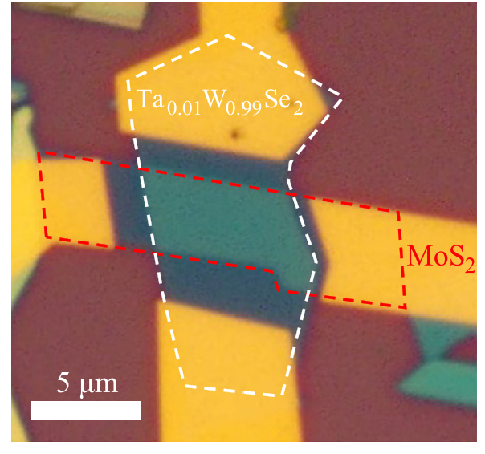

06. Intrinsic p-type W-based Transition Metal Dichalcogenides

Yajun Fu, Mingsheng Long, Anyuan Gao, Kang Xu, and coauthors [PDF]
Applied Physics Letters 111, 043502 (2017)
Two-dimensional (2D) transition metal dichalcogenides (TMDs) have recently emerged as promising candidates for future electronics and optoelectronics. While most of TMDs are intrinsic n-type semiconductors due to electron donating which originates from chalcogen vacancies, obtaining intrinsic high-quality p-type semiconducting TMDs has been challenging. Here, we report an experimental approach to obtain intrinsic p-type Tungsten (W)-based TMDs by substitutional Ta-doping. The obtained few-layer Ta-doped WSe2 (Ta0.01W0.99Se2) field-effect transistor devices exhibit competitive p-type performances, including approximately 10^6 current on/off at room temperature. We also demonstrate high quality van der Waals (vdW) p-n heterojunctions based on Ta0.01W0.99Se2/MoS2 structure, which exhibit nearly ideal diode characteristics (with an ideality factor approaching 1 and a rectification ratio up to 1 x 10^5) and excellent photodetecting performance. Our study suggests that substitutional Ta-doping holds great promise to realize intrinsic p-type W-based TMDs for future electronic and photonic applications.